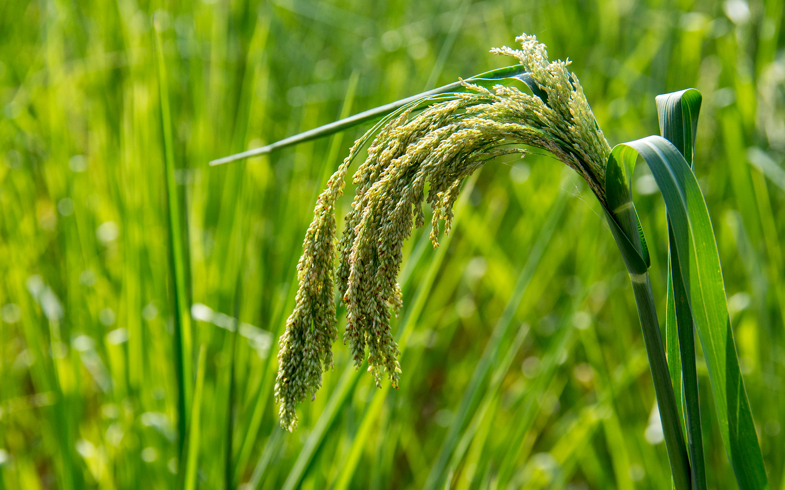
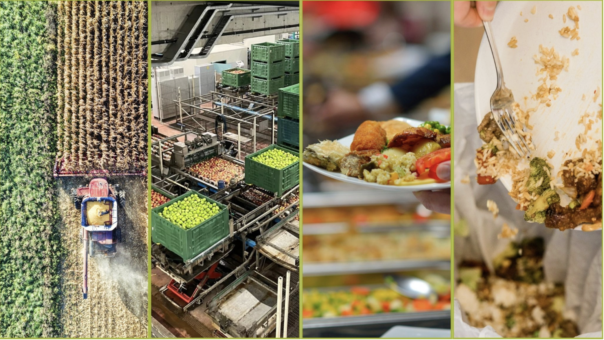
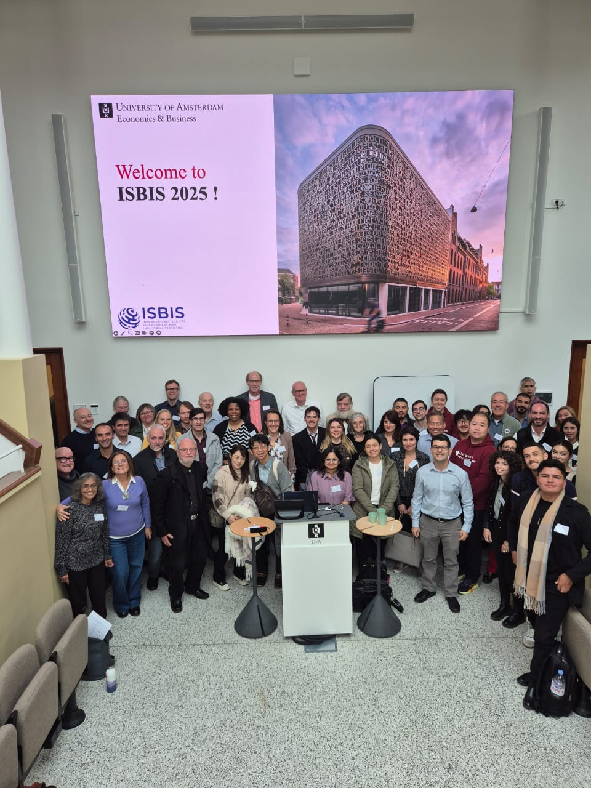
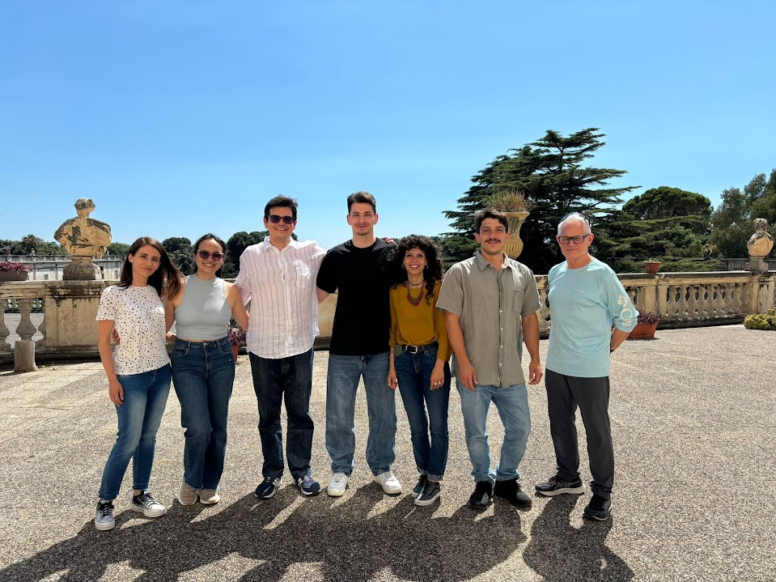
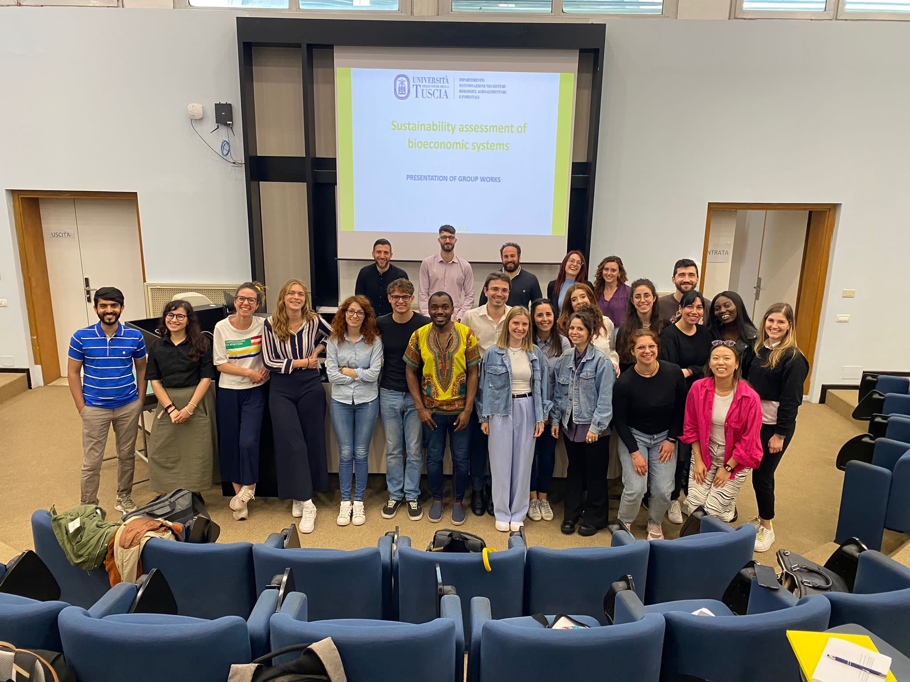
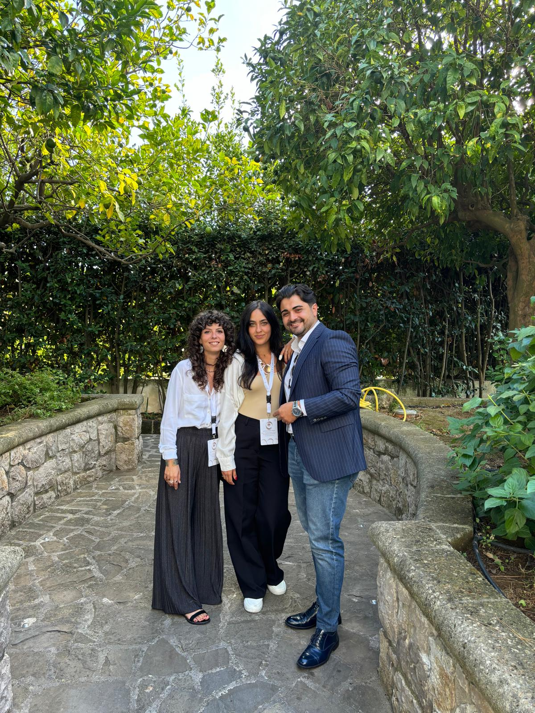
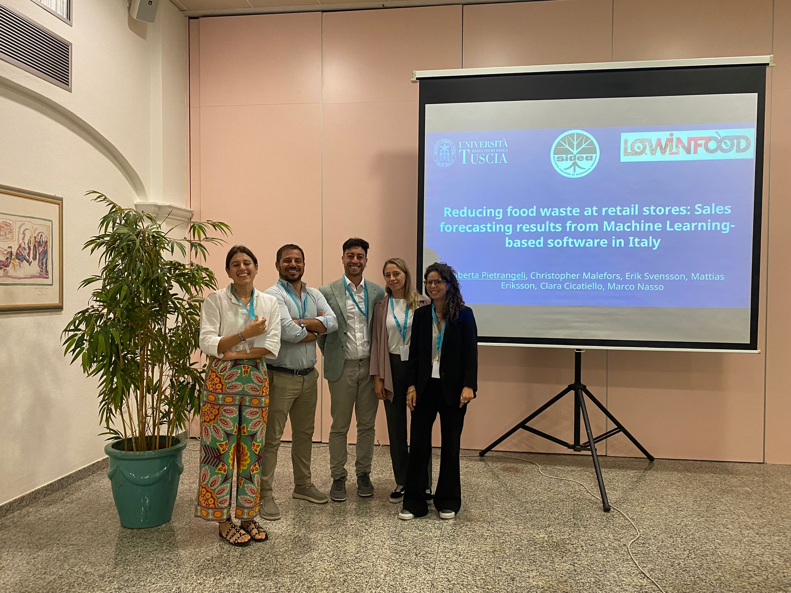
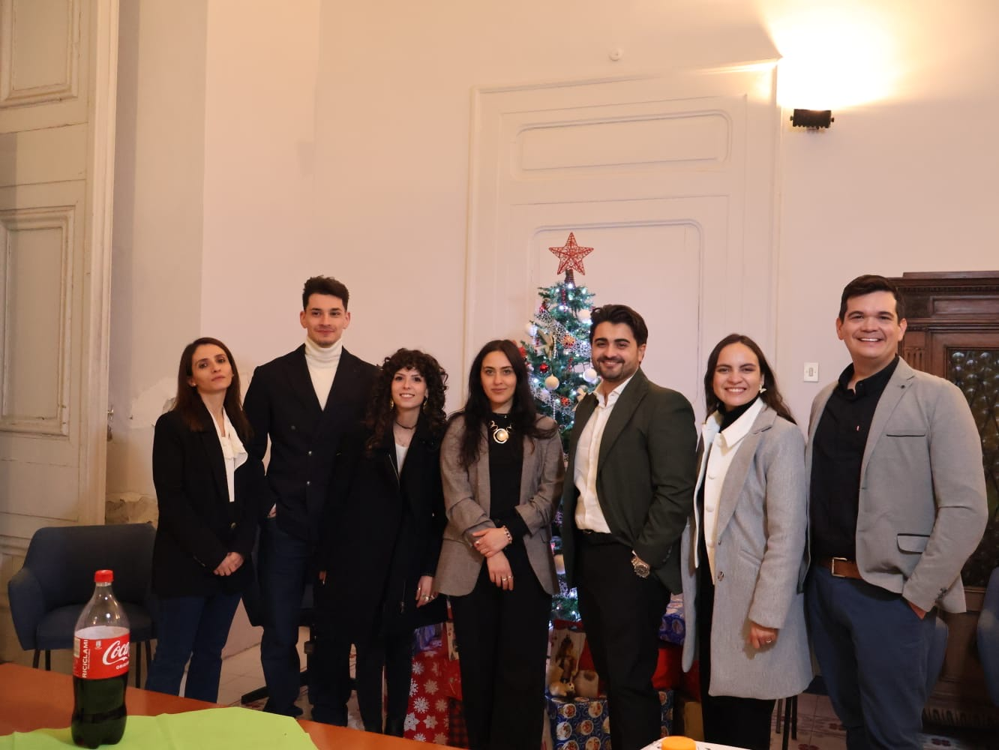
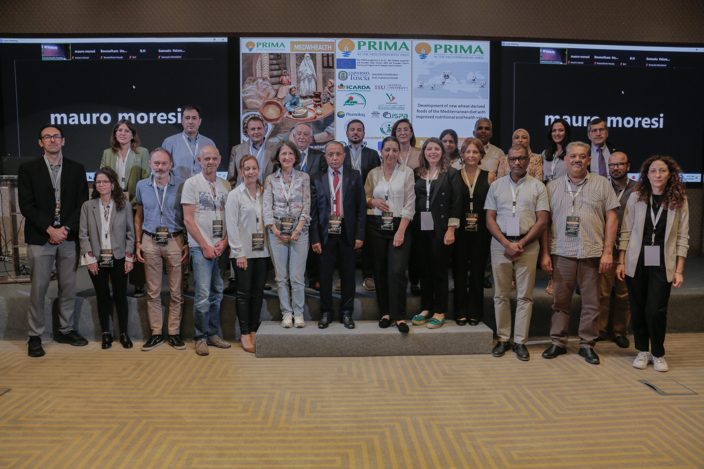

Ph.D. in Science, Technology and Biotechnology for Sustainability - "Foods" curriculum
Research Fellow at the University of Tuscia. My research focuses on the economic evaluation of sustainable practices in agri-food supply chains, public policy analysis, and digital innovation. My research combine quantitative analysis and econometric modeling with fieldwork and stakeholder engagement.
The Common Agricultural Policy (CAP) 2023–2027 introduces stringent sustainability requirements, reshaping land use and influencing crop planning and economic outcomes for European farmers. This study examines the impact of recent CAP reforms on farmland allocation and related implications on farm profitability, in a sample of highly specialized cereal farms located in intensive agricultural areas of Northern Italy. Using Integer Linear Programming models, we simulate farmers’ decision-making under different CAP frameworks, considering 2014–2020, 2021–2023, and 2023–2027 environmental constraints changes. Results highlight a shift in crop distribution, with reductions in staple cereals like maize and wheat and increases in legumes, soy, and industrial crops, aligning with biodiversity and soil health goals. These transitions, however, can lead to reduced farm income, particularly in high-output systems, where profit margins are strongly tied to cereal production. While the findings are specific to a well-defined farming context, they underscore the broader tension between ecological targets and economic viability. The study also considers policy adaptations introduced in response to farmer protests, suggesting that greater flexibility and support mechanisms are critical to achieving sustainability without undermining farm resilience.
APA: Cappella, M. T., Nerozzi, L., Benini, M., Detti, P., & Blasi, E. (2025). Evaluating the economic and land use consequences of sustainability-driven CAP reforms: Insights from an optimization approach in Italian cereal farms. Land Use Policy, 158, 107720. https://doi.org/10.1016/j.landusepol.2025.107720
Chapter 6 di “The multifaceted landscape of rural tourism – Policies and experiences”
This Volume, written by CREA researchers, analyses the different dimensions that characterise interventions to support tourism by rural development policies. It also includes contributions from the Department for Cohesion Policies (Presidency of the Council of Ministers), on tourism and SNAI, and from ISMEA on agritourism.
Forests and the forest sector in rural development policies
Romano R., Mazza E., CAPPELLA M.T., Scarano S., Rivieccio R., Giordano D., Orsini S., Pecchi M., Maluccio S., Pennelli B.
The forestry sector was excluded from the scope of European Agricultural Policy (CAP) until the mid-1980s, but today around 90% of the Union's funds for forests and the forestry sector come from the European Agricultural Fund for Rural Development (EAFRD), dedicated to the second pillar of the CAP. Resources indispensable to give effect to national and regional forest policies. But how have these resources been used over time? This report offers a first analysis of the results obtained over the last 20 years by Italy
Agroforestry systems in Italy: a utopia?
Rivieccio R., CAPPELLA M.T., Orsini S., Pennelli B., Pepe A., Romano R.
The article provides an overview of the current status and development potential of agroforestry systems in Italy. It examines existing practices, regional disparities, regulatory barriers, and emerging opportunities linked to climate adaptation, biodiversity protection, and rural development policies. While adoption remains limited, the analysis highlights growing interest among farmers and policymakers and outlines the conditions needed to scale agroforestry as a viable and sustainable land-use option.
A Stochastic Frontier Approach to Nitrogen Use and Efficiency in Soft Wheat Cultivation
CAPPELLA, M. T., Blasi E., Caracciolo F.
Submitted to: Precision Agriculture
This study evaluates the impact of nitrogen recommendations provided by a Decision Support System (DSS) on soft wheat production and technical efficiency in specialized Italian cereal farms. Employing a Stochastic Frontier Analysis, the research evaluates the relationship between adherence to DSS recommendations and farm performance. The analysis relies on real farm data from the Barilla Farming platform, agrarian year 2022/2023, covering 487 farms and 1,664 fields, including suggested and actual nitrogen applications and observed yields. Findings indicate that compliance with DSS recommendations enhances productivity and efficiency, particularly for medium and large farms, whereas deviations, especially over-application, reduce efficiency with potential increase of costs and environmental risks. Notably, small farms maintain efficiency despite lower nitrogen applications, indicating the need for tailored DSS calibration. Results highlight the importance of site-specific nitrogen management strategies to optimize both economic and environmental outcomes. While promoting DSS adoption is essential, our findings suggest that ensuring farmers' compliance with DSS recommendations is equally—if not more—critical to realizing its full benefits. Policymakers and extension services should not only encourage the uptake of DSS but also focus on strategies that enhance farmers' adherence to recommended practices. Additionally, ensuring the adaptability of DSS to different farm structures is key to maximizing its impact across varying production scales.
What Works in Digital Transformation for Agro-Industry? Evidence from Meso-Institutional Governance in the Tomato Value Chain.
CAPPELLA, M. T., Rossi E.S., Blasi E.
Submitted to: Journal of Supply Chain Management
This study examines behavioral and organizational factors influencing farmers’ acceptance of digital farming technologies and how governance mechanisms in hybrid agri-food chains shape innovation. Focusing on the Italian processed tomato supply chain, it analyses how Producer Organizations (POs) combine technical, contractual, and relational governance to foster Decision Support Systems (DSS) adoption. Drawing on the Technology Acceptance Model (TAM) and supply chain governance theory, the study integrates two complementary data sources: (i) survey data from 260 tomato producers, distinguishing DSS users and non-users, analysed through two parallel structural equation models evaluating the effects of usefulness, ease of use, environment, and support quality on adoption behaviour; and (ii) a structured analysis of existing contracts and farmers’ preferred contractual clauses, assessing how hybrid governance instruments, minimum price guarantees, quality premiums, multiannual commitments, and technology-support measures, relate to digital adoption pathways. Results reveal clear asymmetries between adopters and non-adopters. For non-users, adoption intention is driven by perceived support and peer influence, whereas for users, ease of use and attitude explain continued utilization. Across both groups, PO-provided support enhances perceived ease of use, confirming the centrality of relational and institutional enablers. Contractual preferences also diverge, non-users prioritize minimum-price guarantees, while users favour quality-based incentives, multiannual commitments, and innovation-oriented clauses. The study bridges behavioural adoption models with contractual and relational governance mechanisms, showing that digital transition in agriculture arises from the interaction between individual perceptions and coordinated supply chain arrangements. It advances the integration of TAM with SCM theory, offering actionable insights for designing enabling environments, differentiated contractual bundles, and support systems that align digitalization with farmers’ heterogeneous risk profile
Does policy empower consumers for the green transition? Insights on claims and color effects on sustainability perceptions
CAPPELLA, M. T., Borrello M., Trinchera L., Blasi E., Vecchio R.
Submitted to: Food Policy
The present study critically examines whether current EU regulatory efforts to curb greenwashing, specifically Directive (EU) 2024/825, adequately address the perceptual biases generated by visual cues. The analysis explores how visual and textual elements on food packaging jointly shape consumers’ perceptions of product sustainability, with specific attention to the color green and the type of environmental claim (compliant Vs. vague). A nationally representative sample of 1,004 Italian responsible of household food purchasing participated in a Best–Worst Scaling (BWS) evaluation. Respondents evaluated seven food categories (e.g., pasta, tomato sauce, tuna) differing in packaging color and sustainability claims. Psychographic constructs such as environmental concern, trust in the food system, and consumer expertise were also measured to explain preference heterogeneity. Results show that green-colored packaging systematically enhances perceived sustainability, even when claims are vague or non-compliant. Regulation-compliant claims are preferred overall, yet the green color amplifies perceived environmental friendliness independently of textual accuracy. The color effect persists across product categories but weakens or reverses for culturally emblematic products such as pasta and tomato sauce, where authenticity and familiarity shape perception. Latent class analysis revealed limited heterogeneity, suggesting that heuristic reliance on green cues is widespread rather than segment-specific. The study integrates behavioral and policy perspectives to demonstrate that visual heuristics can undermine regulatory efforts against greenwashing. Findings highlight the need to complement textual regulation with behavioral insights and visual communication guidelines, combining stricter marketing oversight with consumer education to enhance critical interpretation of sustainability cues.
Willingness to Pay for Mediterranean Forest Ecosystem Services: Evidence from a Case Study on Cork Oak Forests
Borrello M., CAPPELLA M.T., Altomonte E., Vecchio R.
Submitted to: Journal of Cleaner Production
Mediterranean forest ecosystems are increasingly threatened by climate change, land abandonment, and socio-economic pressures. Payment for Ecosystem Services (PES) schemes have been proposed as innovative tools to support their conservation. This study explores residents’ willingness to pay (WTP) to contribute to such a scheme, using cork oak forests as a representative case. The present study analyses whether residents (n = 268) of the Golfo di Policastro area (Sothern Italy) are willing to contribute to the conservation of these endangered ecosystems through an annual donation. Additionally, the impact of scientific and popularized information on residents’ WTP is explored together with the main drivers behind individuals’ willingness to contribute for the conservation of cork oak forests. Results show that 45.52% of the respondents were willing to contribute with an average WTP of 26.02 €/year (SD = 21.31). Furthermore, participants exposed to scientific information revealed a more marked increase in their average WTP (32.85 €/year) than those who received populararized information. Findings also prove that perceptions of importance of protection of cork oak forests, knowledge about other uses of cork oak trees, pro-environmental behaviors, and financial satisfaction level are positively associated with the likelihood of being willing to pay. Conversely, perceptions of natural resources availability were negatively associated with the probability to contribute. These insights provide implications for the design of PES schemes across Mediterranean forest landscapes.
Projects

CROPCAT
HORIZON Europe- Food, Bioeconomy Natural Resources, Agriculture and Environment
About: “CropCat – A thematic network to boost small-scale sustainable farming through sustainable cropping practices”. The EU-funded Crop-MATCHING project introduces, adopts and applies a novel agro-ecological concept that ‘matches’ farming systems by mimicking nature to support long-lasting and effective solutions. This approach enables small-scale farms to effectively implement environmentally friendly practices, thereby further supporting rural communities, agro-biodiversity, and both environmental and economic objectives.
Activities: Analysis of the economic value of minor crops in the project. Collection and systematization of company data on the crops considered. Estimating net value and production costs to assess their economic viability.

WASTEWISE
HORIZON.2.6 - Food, Bioeconomy Natural Resources, Agriculture and Environment
About: “WASTEWISE – WASTE AVOIDANCE STRATEGIES FOR ENVIRONMENTAL SUSTAINABILITY”. WASTEWISE sets out to develop robust, innovative methods to evaluate the environmental impacts associated with food waste in the EU, with particular emphasis on greenhouse gas (GHG) emissions and biodiversity loss. By gathering and analysing available data and addressing critical gaps, the project will design evidence-based prevention and reduction pathways and identify new innovations to accelerate the EU’s progress toward climate neutrality. Special attention will also be paid to assessing potential rebound effects that may arise from food waste reduction interventions.
Activities: Analysis and measurement of food waste for specific food chains; measurement of environmental impacts; design of waste prevention and reduction scenarios to enable progress towards EU climate objectives.
About: “MEDWHEALTH – DEVELOPMENT OF NEW WHEAT-DERIVED FOODS OF THE MEDITERRANEAN DIET WITH IMPROVED NUTRITIONAL AND HEALTH VALUE”. MEDWHEALTH proposes to develop durum wheat products typical of the Mediterranean Diet with improved nutritional value and new technological properties. MEDWHEALTH will develop new durum wheat-based foods traditional to the Mediterranean region using innovative materials and processes: i) high-amylose durum wheat to improve fiber content, antioxidant, and anti-inflammatory properties; ii) soft-caryopsis durum wheat to improve sustainability, nutritional, and technological quality; iii) cereal and legume flours to improve mineral and protein content. With the aim of preserving traditions, women's cooperatives from different countries will be involved to make local food products. To respect local cultural identity and biodiversity, MEDWHEALTH will develop products typical of each country involved in the project: pasta, taralli, friselle, durum wheat bread for Italy; bulgur and flatbreads for Turkey; couscous for Morocco, Tunisia and Algeria; freekeh for Lebanon.
Activities: Estimation of production costs of products based on the durum wheat varieties proposed in the project; data collection through desk analysis and field analysis in order to recreate the regional scenario of the partner countries involved; processing of the data collected for the economic evaluation of production costs per hectare/year.
Aboout: The National Forest and Forest Supply Chain Information System (SINMor) is an innovative public operational tool, available online, that collects, harmonizes, systematizes, and shares all the statistical and cartographic data and information available to date regarding the national forest heritage and its productive, environmental, and socio-cultural supply chains.
Activities:Studies and analyses of existing forest-related ecosystem services projects, with particular attention to hydrogeological instability (erosion, landslides, and floods), and data processing, questionnaires, interviews, focus groups, and information necessary for the implementation of the 2021 State of the Forests Report. Creation of the Forest Database for the SINFor (National Forest Information System) System. Survey on measure 8.2 - "Support for the setting up of agroforestry systems (planting and maintenance costs)". Physical and economic data analysis, qualitative analysis through interviews and questionnaires
Aboout: The "Carta del Mulino" is a specification for the sustainable cultivation of soft wheat, born from the collaboration with dozens of mills, hundreds of storage centers and thousands of farms. It consists of 10 rules designed to bring quality to products, support the work of farming communities, and protect biodiversity, including by protecting pollinating insects.
Activities:Analysis of the economic sustainability of the practices required by the Mill Charter for farmers. Evaluation of the effectiveness of the price premium in covering initial costs and incentivizing adoption. Analysis of cost redistribution mechanisms along the supply chain to ensure economic and environmental balance. Evaluation of the economic and technical impact of the adoption of digital technologies (DSS) on participating farms.
Talks & Conferences
ISBIS Conference 2025 (Amsterdam) – CAPPELLA M.T., Trinchera L., Borrello M., Blasi E., Vecchio R.
“Trust or Deception? An SEM Analysis of Consumer Attitudes on Sustainability Claims in the Food Industry.”
2–3 Ottobre 2025 – Role: Speaker
1st SIDEA-SIEA-CESET Conference (Benevento) – CAPPELLA M.T., Borrello M., Trinchera L., Blasi E., Vecchio R.
“Green or Greenwashed? Italian Consumer Responses to Sustainability Claims and Packaging Design (GWC)”
2–4 Luglio 2025 – Role: Speaker
1st SIDEA-SIEA-CESET Conference (Benevento) – Rossi E.S., CAPPELLA M.T., Blasi E.
“Vertical coordination models to boost digital farming technologies adoption. A TAM analysis applied to processed tomato supply chain in Italy.”
2–4 Luglio 2025
14th AIEAA Conference (Pisa) – CAPPELLA M.T., Nerozzi L., Benini M., Detti P., Blasi E.
“Evaluating the economic and land use consequences of sustainability-driven CAP reforms: Insights from an optimization approach in Italian cereal farms”
18–20 Giugno 2025
60th SIDEA Conference (Anacapri) – CAPPELLA M.T., Toscano P., Visciano O., Blasi E.
“Evaluating the impact of Decision Support Systems on sustainability and yield in the Italian bakery products supply chain”
15–17 Settembre 2024 – Role: Speaker
59th SIDEA Conference (Marina di Orosei) – CAPPELLA M.T., Blasi E., Toscano P., Fosci L.
“Adoption of technological innovation and farmers’ perception in the bakery Italian supply chain”
21–22 Settembre 2023 – Role: Speaker. Published in: Book of Abstracts of the LIX SIDEA Conference
Workshop – Italian PhD Research (Portici) – CAPPELLA M.T. Poster: “Digital innovation for sustainable intensification in cereals sector. An economic valuation of contractual agreement and CAP eco-schemes adoption in bakery value chain in Italy”
13–15 Settembre 2023 – Role: Speaker
31th SIEA Conference (Venezia) – CAPPELLA M.T., Blasi E., Fosci L.
“Agro-ecological Transition, Eco-schemes, and Sustainable Agriculture: Agricultural Entrepreneurs and Supply Chains Between Commercial Incentives and Environmental Commitments”
15–16 Giugno 2023 – Role: Speaker
“Research means collaboration, vision, and shared curiosity.”

ISBIS 2025 – Amsterdam

Production Function Summer School 2025 – Portici

Bioeconomics PhD course 2023 – Viterbo

SIDEA 2024 – Anacapri

SIDEA 2023 – Marina di Orosei (NU)

Master Graduation 2024 – Portici
CropCat Meeting 2025 – Toulouse

Medwhealth Meeting 2025 – Tunis
Have a question or want to collaborate? I'd be happy to hear from you.
Click the button below to send an email.